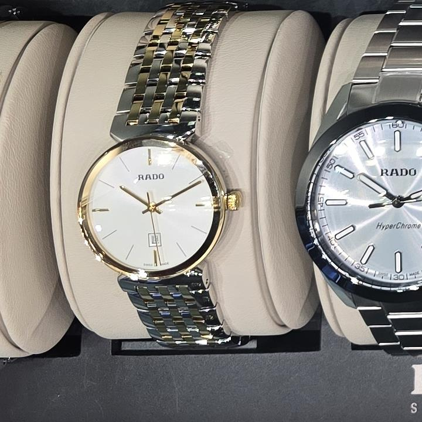

Store sighting · original Lumio photography
Rado classic
white and gold
Photographed by Lumio in store on 16 October 2026.

What we can identify
A white-dial Rado with gold-tone accents, a date display and a multi-link bracelet. The clean dial and restrained case give it a classic dress-watch direction.
Reference & current price
Verification in progress. Lumio will only name an exact reference, list specifications or link to a seller after matching it with official documentation.
Source: original Lumio store photograph. Brand context: Rado Canada.